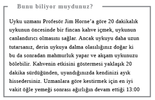

Haftasonları
HAFTASONLARI BAZEN tam bir hayalkırıklığına dönüşebilir. Hafta boyunca o iki günü iple çekersiniz, sonra da kendinizi Pazartesi sabahı işe dönmek için can atar halde bulursunuz. Kim bilir, belki iradeniz sizi terk etti ve korkunç bir başağrısıyla uyandınız, daha iyi yeme veya egzersiz yapma planlarınızı uygulayamadınız ya da kredi kartınızı yine doldurdunuz. Belki de aile içi gerilimler kötü bir atmosfer yarattı. Yoksa sadece dünyalar kadar çamaşırla ve ev işleriyle uğraşmak mı sinirlerinizi bozdu? Yalnız yaşıyorsanız, herkesin vur patlasın çal oynasın eğlendiğini, kendinizinse bir yerlerde bir hata yaptığını düşünmek gibi bir tuzağa düşebilirsiniz. Oysa haftasonunu en iyi şekilde değerlendirmek bir sanattır. İşte bu bölüm de bunu başarmanızı sağlayacak önerilerle dolu.
Kendinizi Şımartın
Haftasonu geldi; gönlünüzce vakit geçirmenin, kendinizi şımartmanın tam zamanı. Doğru şımartma yöntemlerini seçerseniz, işten uzak iki gününüzün tadına en iyi şekilde varabilirsiniz.
Geç saate kadar uyumalı mı, kalkmalı mı?
Haftasonunda birkaç saat fazladan uyku cazip görünse de bu şekilde uyku düzeniniz bozulur ve Pazartesi sabahı uyanmanız zorlaşır. Günü keyif aldığınız şeylerle veya biraz spor yaparak geçirirseniz, kendinizi yenilenmiş ve dinlenmiş hissetme ihtimaliniz daha yüksektir. Geç saate kadar uyursanız rüyalarınızın daha çok farkına varabilirsiniz: Gecenin bitişinden sonra rüya görme süremizin uzadığı türden uykudur bu.
Yanıt: Kalkmalı
Geleneksel dondurma mı, çubuk buzlu dondurma mı?
Güzel bir yaz günü için karşı konulmaz lezzetler bunlar ama şüpheniz varsa bilin ki çubuk buzlu dondurmanın kalorisi daha düşüktür. Çubuk dondurmaların içi elbette ki şeker doludur, yemesi de daha uzun sürer, üstelik tabii dişler için en kötüsüdür -ayrıca her tür katkı maddesi de içerir- ama sonuçta burada kendinizi şımartacağınız bir tattan söz ediyoruz. Çubuk dondurmanın yağ oranı geleneksel dondurmadan daha düşük. Örneğin, popüler çubuk dondurma markalarından biri 90 kalori içeriyor ve hiç yağı yok. Meyve ve dondurma karışımı olanlar da yaklaşık aynı miktarda kalori ama daha fazla yağ içeriyor. 100 ml vanilyalı dondurmada yaklaşık 100 kalori, külah eklenirse, çeşidine göre fazladan 20-50 kalori, standart Magnum’da ise 275 kalori var. Loveicecream.com gibi siteler kalori konusunda iyi birer kaynak. Çubuk dondurmanın içeriğini tamamen öğrenmek istiyorsanız etiketini okuyun. Dilerseniz meyve suyunu veya yoğurdu mutfak malzemesi satan dükkânlardan veya çevrimiçi alışveriş sitelerinden alacağınız kalıplarda dondurarak, sağlıklı çubuk dondurmalar da yapabilirsiniz.
Yanıt: Çubuk buzlu dondurma

Alışveriş
Koca bir haftayı ekmek parası için çalışıp didinerek geçiriyoruz. Bu zorlu saatlere değdiğini hissedebilmemiz için haftasonunda biraz alışveriş terapisi yapmak gibisi yoktur. Ama alışverişte akıllı olun ki parayı çok daha uzun süre idare edebilesiniz.
Bir şey mi almalı, bir şey mi yapmalı?
Yapılan araştırmalar, insanlardan satın aldıkları bir eşya almak ile yakın zamanda yaşadıkları keyifli bir deneyimin yarattığı iyi hisleri karşılaştırmaları istendiğinde, her ikisinin de neşe verdiğini ama keyifli deneyimin tartışmasız galip çıktığını gösterdi. Bizler haftasonu kaçamağı gibi mutlu anıları korumaya, yoldaki berbat trafik gibi anıları ise unutmaya yatkınız. Eşyalara gelince, onlar da ya eskir ya bozulur. Ayrıca deneyimleri başkalarıyla paylaşma olasılığımız da daha yüksektir ki bu da işe sosyal bir boyut kazandırır. Dolayısıyla yeni bir CD almakla, konsere gitmek arasında tercih yapmanız gerekiyorsa, konsere gidin.
Yanıt: Bir şey yapmalı


Alışverişi internetten mi yapmalı, mağazadan mı?
İnternet üzerinden alışveriş yükselişte, mağaza alışverişi düşüşte olsa da her ikisinin de ardında ilginç bazı psikolojik faktörler yatıyor. Mayıs 2011’de, önde gelen araştırma şirketi ESA’nın gıda alışverişi yapanlarla yürüttüğü bir çalışma, alışverişçilerin internetten çok, mağazada sunulan fırsatların farkına vardıklarını ama ayartılmaktan kaçabildikleri için pek çoğunun internet alışverişini tercih ettiğini ortaya koydu.
California Teknoloji Enstitüsü’nün 2010’daki laboratuar çalışması ise nesneleri, resmine bakmak ya da tarifini okumak yerine, dokunduğumuz zaman daha değerli bulduğumuzu gösterdi. Kısacası eve “üç al iki öde” ürünleriyle dolu torbalarla gelmek ya da bütçenizi aşan muhteşem, cazibeli nesnelere para harcamak istemiyorsanız, alışverişi evden yapmanız daha iyi.
Yanıt: İnternetten

Nakit mi ödemeli, kredi kartıyla mı?
Beynimiz anında memnuniyet veren bir şeyin ödemesini sonradan yapma konusundaki çelişkiyi dengelemekte zorlanıyor. “Onu şu an istiyorum” diyor beynimiz, “sonuçları önemli değil.” Jonah Lehrer gibi nörobilimciler, maddi gücümüzü aştığını bildiğimiz bir şeyi krediyle satın alma kararı verirken, beynimizin duygusal tatminle ve rasyonel düşünceyle ilgili bölümlerinin çatıştığını düşünüyor. Duygusal bölüm baskın çıkarsa ödemeyi nakit yerine kredi kartıyla yaptığımızda çok daha fazla para harcayabiliyoruz. Mağazaların kendi kartlarını dayatarak bizi kredi kartı kullanmaya teşvik etmesinin nedeni de bu. Nörobilimciler ayrıca kredi kartı kullandığımızda beynimizin negatif duyguları, elimizden büyük miktarda para çıktığında oluşan negatif duygular kadar algılamadığını da ileri sürüyor. Yani gerçek anlamda hafifleyen bir cüzdanın verdiği mesajı eve getirme olasılığımız, kredi kartı fişinin mesajına kıyasla çok daha fazla. MIT araştırmacılarının yürüttüğü bir çalışma da nakit yerine kredi kartı kullanmaları söylendiğinde insanların nesnelere para ödeme arzusunun arttığını kanıtladı. Vardıkları sonuç mu? Kredi kartınızı daima evde bırakın.
Yanıt: Nakit
Kendini mi şımartmalı, başkasını mı?
Alışveriş bazılarımızı öyle rahatlatır ki bu onlar için adeta “perakende terapisi”ne dönüşür. Çalışmalar insanların moralsiz olduğunda daha fazla para harcadığını gösteriyor. Bu durum alışkanlığa dönüştüğü takdirde borca ve ilişki sorunlarına yol açarak son derece yıkıcı olabilir. Araştırmacılar alışverişin tıpkı kumar ya da sigara gibi bağımlılığa dönüşebileceğini söylüyor. Çünkü alışkanlık, beynimizin ödül ve tatminle ilgili bölümlerini besliyor ve onlar da tekrar tekrar beslenmek istiyor. Sonunda ortaya pek de komik olmayan “alışverişkolik” yaftası çıkıyor.
Kendinizi şımartacak küçük bir şey almak neşenizi yerine getirebilir ama başkası için yapacağınız bir alışveriş sizi daha da mutlu edebilir. Yapılan birkaç deney, başkalarına para harcayanların kendilerine harcamaktan daha büyük mutluluk duyduklarını gösterdi. Nörobilimciler beynimizin temel ihtiyaçlarımızı karşılamayla ilgili bölümlerinin aynı zamanda başkalarına yardım etmeyle de ilgili olduğunu düşünüyor. Birine hediye almanın yarattığı güzel duygu, grup içinde hayatta kalma ihtiyacı duyan ilkel atalarımızdan geliyor olabilir.
Yanıt: Başkasını
Aktifleşin
Haftasonları aynı zamanda hafta boyunca sebatla görmezden geldiğiniz ev işlerini halletmeye çalıştığınız bir zaman. Bu süre içinde ilginizi büyük işlere -özellikle de size bolca ter döktürecek olanlara- odaklarsanız egzersizi de aradan çıkarmış olursunuz.
Aynı anda birden fazla iş mi yapmalı, teker teker mi?
Haftasonları kendinizi kafası kesik tavuklar gibi sağa sola koşturup ev işlerini halletmeye çalışırken buluyorsanız, aynı anda çok iş yapma efsanesine kanmış olabilirsiniz. Bu efsaneye göre farklı işler arasında mekik dokumak iş halletmenin harika bir yöntemidir. Exeter Üniversitesi’nden Stephen Monsell ve Minnesota Üniversitesi’nden Sophie Leroy’un da aralarında olduğu beyin bilimciler bu işleme “görevler arası geçiş” diyor. Yaptıkları araştırmalar farklı işler arasında geçiş yaptığımızda bir işi tamamlamanın daha uzun sürdüğünü gösteriyor. Bir işi baştan sona yaparak tamamlarsak o işin bir sonraki işi bölmesini engellemiş oluyoruz. Tamamlanan işe zihnimizde bir “tamam” işareti atıyoruz ve işlere devam ederken ona kafa yormaktan kurtuluyoruz. Başarılı biçimde aynı anda birçok işi yapabilenler genelde yaptıkları işte pratik sahibi oluyor. Bildiğiniz bir yoldan geçerken radyoda çalan şarkıya eşlik edebilmenizin nedeni de bu.
Yanıt: Teker teker

Camları mı silmeli, arabayı mı temizlemeli?
Hoş bir manzarayı bozan ya da ışığı engelleyen kirli camların moral bozucu bir yanı vardır. Tabii içi çer çöp dolu, kuruyup yapışmış yemek parçaları, hayvan tüyleriyle kaplı, pis ve dağınık bir arabanın da ondan geri kalır yanı yoktur. Rutin temizlik işleri insana tatmin verebilir ve iyi birer egzersizdir ama cam silmek, bir arabanın içini ve dışını temizlemekten daha az kalori harcatır -ilki saatte 160 ikincisi 200 kalori- çünkü araba temizleyenler daha fazla “çok yönlü” eğilip kalkarlar. Cam silme konusunda bir uyarı: Ev kazalarında en çok ölüm ve ciddi yaralanma vakası merdivenden düşme şeklinde gerçekleşir çünkü insanlar genelde merdiveni kaydırmak yerine eğilerek uzanmaya çalışır. Bu yüzden de cam temizlerken merdivenin yere sağlam ve sabit açıyla oturmasına dikkat edin.
Yanıt: Araba temizlemeli

Elektrik süpürgesi mi yapmalı, çim mi biçmeli?
Elbette ki her ikisi de size kendinizi erdemli hissettirecek ama çim biçme makinesini sağa sola ittirmenin (ve başka bahçe işleri yapmanın) size yararlı olduğunu söylemek için çeşitli nedenler mevcut.
Yarım saatte 110 kalori yaktığınız elektrik süpürgesi yapmaya kıyasla çim biçme daha fazla enerji harcatır (190 kalori). Artık pek çok çalışmayla da kanıtlandı ama doğaya yakın olmanın morale iyi geldiğini bilmek için psikolog olmanız gerekmiyor.
Yanıt: Çim biçmeli
Egzersizin hepsini bir kerede mi yapmalı, parçalara mı ayırmalı?
Hafta içinde meşgulseniz, hafta sonunda tek ve uzun bir egzersiz seansı yapmak kulağa iyi bir fikir gibi gelebilir ve tabii ki hiçbir şey yapmamaktan iyidir. Ancak uzman görüşüne göre ideal olarak haftada üç bölüme ayrılmış toplam 150 dakikalık egzersiz yapmayı hedeflemeniz gerekir. Buna sadece spor aktiviteleri değil, çim biçme, ritmik yürüyüş ya da işe bisikletle gitme de dâhil olabilir. 30 dakikalık beş seans iyidir ama onun yerine ragbi veya bahçe kazma gibi zorlayıcı bir işle geçen iki tane 75 dakikalık seans da yeterli olur. Burada kilit noktası kalp atışlarınızı hızlandırmak ve biraz nefessiz kalıp terlemektir.
Peki, haftasonu gerçekten aktif olabileceğiniz tek zamansa, en iyi egzersiz türü hangisidir? Gözönüne alınması gereken en önemli şey hoşlanacağınız bir şey yapmanızdır. Hoşlanmadığınız bir şeye devam etmeniz zor olur. Ancak kilonuz, ne kadar formda olduğunuz ve sporu grupla mı, tek başınıza mı daha iyi sürdürdüğünüz de önemli faktörler arasındadır. Kalp ya da nefes sorunlarınız varsa öncelikle doktorunuza danışmalısınız. Baldır kaslarını ve dizardı kirişlerini esnetme gibi ısınma egzersizleri incinmeden korunmada ayrı bir önem taşır. Ne kadar kondisyonsuzsanız, incinme olasılığınız o kadar artar. Yıllarca hareketsiz kaldıktan sonra haftasonunda futbol oynamanın vakti geldiğine karar veren orta yaşlı erkekler, büyük olasılıkla takımın gol kralı olmak yerine, dizlerini sakatlayacaklardır.
Yanıt: Parçalara ayırmalı

Düz yolda mı koşmalı, yokuş yukarı mı?
Form tutmada en sevdiğiniz yöntem koşmaksa ünlü fitness eğitmeni Matt Roberts size parkta ya da kırsalda çimli bir bayır bulmanızı ve burada düz bir hatta koşmak yerine, zikzaklar yaparak, bir dakika hızlı adımlarla yokuş yukarı, sonra iki dakika daha yavaş yokuş aşağı koşmanızı öneriyor. Kalp sağlığınızı ve vücudunuzun kalori yakma hızı olan metabolizma hızınızı arttırmanın harika bir yoludur bu. Bu tür aktivitenin teknik adı “aralıklı antrenmandır”. Aynı faydayı düz zeminde bir dakika sprint, iki dakika jogging yaparak da elde edebilirsiniz ama muhtemelen Tabiat Ana’dan yararlanmak daha kolay ve eğlenceli olacaktır. Yeni başlayanlar altı tekrarı, orta düzeydekiler sekiz tekrarı hedeflemeli, dövüşçü formunda olanlarsa ona kadar çıkabilir. Bunu düşününce bile bayılacak gibi oluyorsanız, parkta ya da plajda oynayabileceğiniz beyzbol veya frizbi gibi oyunlar dinlenme periyotları da içeren kısa, keskin aktivite patlamaları içerir. Tabii düzenli aralıklarla grup toplamak kolay olmayabilir.
Yanıt: Yokuş yukarı

Çıplak ayakla mı koşmalı, spor ayakkabıyla mı?
Ayakkabısız koşmak kulağa işkence gibi gelebilir ve şehirde yaşayanlar için kolay bir seçenek de değildir ama atalarımız bunu binlerce yıl yaptı. Şimdilerde Harvard Üniversitesi’nin yürüttüğü bir araştırmanın da desteklediği bir teori sayesinde çıplak ayakla koşmanın popülaritesi artıyor. Teoriye göre spor ayakkabıyla koşmak ayaklar için iyi değil. Destekleyici ayakkabı yere hızla çarpmanın yarattığı etkiyi maskeliyor ve böylece zarar verme potansiyeline sahip şok dalgalarını eklemlere göndererek, “koşucu bacağı” denen ağrılı rahatsızlıklara neden olabiliyor. Teoriye göre çıplak ayakla topuğun üstüne iniş yapmak acı verici olduğundan, çıplak ayakla koşanlar bacaklarını hafifçe kırarak ayağın ön kısmına daha fazla ağırlık veriyor ve yere daha dikkatli basıyorlar. Çıplak ayakla koşan tanıdığım biri daha hafif adımlarla yere basmanın verdiği hisse bayıldığını söylüyor. Ancak o, daima çim saha gibi yumuşak zeminde koşuyor, asla asfaltta değil. Ayrıca kırık cam ve köpek kakası gibi tehlikeleri hızla ayırt edebildiğine göre gözleri de hayli keskin olmalı. İki koşu türünden birinin üstünlüğünü destekleyen somut bir kanıt yok ama henüz acemiyseniz öncelikle bir kursa gitmeniz önerilir. Bkz. Naturalrunning.co.uk. Spor ayakkabı giyecekseniz ihtiyacınıza uygun tercihi danışmak için özellikle koşu malzemeleri satan bir yere uğramanız yararlı olacaktır.
Yanıt: Spor ayakkabıyla

Arnika mı, buz torbası mı?
Arnikanın şişkinlik, morarma ve ağrıyı azalttığı düşünülüyor. Her ne kadar İngiltere’de Tıp ve Sağlık Ürünleri Düzenleme Kurumu’nun (MHRA) lisans verdiği ilk homeopatik ilaç olsa da arnikanın etkili olduğu yönünde sağlam bir bilimsel kanıt mevcut değil. Arnikayı hem hap olarak hem de alt dokulardaki kanamadan kaynaklanan morarmanın tedavisinde kullanmak üzere krem olarak bulabilirsiniz. Ancak buz, kanamayı, kas spazmı ve ağrısını azaltabildiği için etkili bir çaredir. Ayrıca şişkinliği ve uyuşukluğu da önler. İncinmeden sonraki ilk 48 ila 72 saat içinde günboyu iki-üç saatte bir, nemli havluya sarılmış buzu 15 ila 20 dakika boyunca incinen bölgeye uygulayın. Ancak buzu uyurken kullanmayın ve doğrudan cildinize değdirmeyin, aksi takdirde soğuk yanığı oluşabilir. Paula Radcliffe gibi maraton koşucuları ve komedyen Eddie Izzard enflamasyonu ve şişkinliği azaltmak için sık sık buz banyosu yapar. Biz sıradan insanlar içinse dondurulmuş bezelye paketi bile iş görür.
Yanıt: Buz torbası

Spor/enerji içeceği mi, meyve sulu içecek mi?
Yoğun egzersizden dolayı, özellikle de sıcak bir günde vücut sıvısı kaybediyorsanız, bunu telafi etmek zaten akla en yatkın şeydir. Ancak sözde spor ve enerji içeceği denen şeyler genelde şeker ve kafein yüklüdür. Bu yüzden de satın almadan önce etiketi okuyun. Örneğin, popüler enerji içeceklerinden birinin yarım litresinde 140 kalori ve biraz da kafein var. Eşit miktarda bir popüler spor içeceği ise 135 kalori içerir ama kafeinsizdir. Çocuklara kafeinli içecek vermeniz önerilmiyor. Kendiniz için de iki ölçü suya bir ölçü meyve suyu katarak ucuz ve sağlıklı bir enerji içeceği hazırlayabilirsiniz. Uzun süre egzersiz yapacaksanız, bir çimdik tuz da kaybettiğiniz terdeki tuzun yerini alacaktır.
Yanıt: Meyve sulu içecek

Pişman mı olmalı, boş mu vermeli?
Haftasonları kimi zaman insana bitmek bilmez gibi gelebilir; özellikle de yalnız yaşıyorsanız. Dikkatinizi odakladığınız işiniz olmayınca hayatınızda ters giden şeyleri düşünmeniz için bolca vakit doğar. Gerçi pişmanlığın yararları da olabilir. Pişmanlık sayesinde sizin için neyin önemli olduğunu anlayabilirsiniz. Onu olumsuz bir şey gibi görmek yerine, geleceğinizi belirlemede kullanın. Teklif edilen bir işi kabul etmediğinize pişmansanız, o işin hangi yönünün sizin için önemli olduğunu sorun kendinize. Neyi kaçırdığınızı düşünüyorsunuz? Buradan yola çıkarak değerlerinizi ve hayattan ne beklediğinizi belirleyebilirsiniz. Pişmanlığa neden olan şey genelde ya “yanlış” karar vermek ya da hiç vermemektir. Gelecekte araştırmanızı yapın, sezgilerinize güvenin ve hiçbir kararın “yanlış” olmadığını kabul edin. Yanlış karar denen şey sadece ne istediğinizi öğrenmenizin bir yoludur.
Yanıt: Boş vermeli